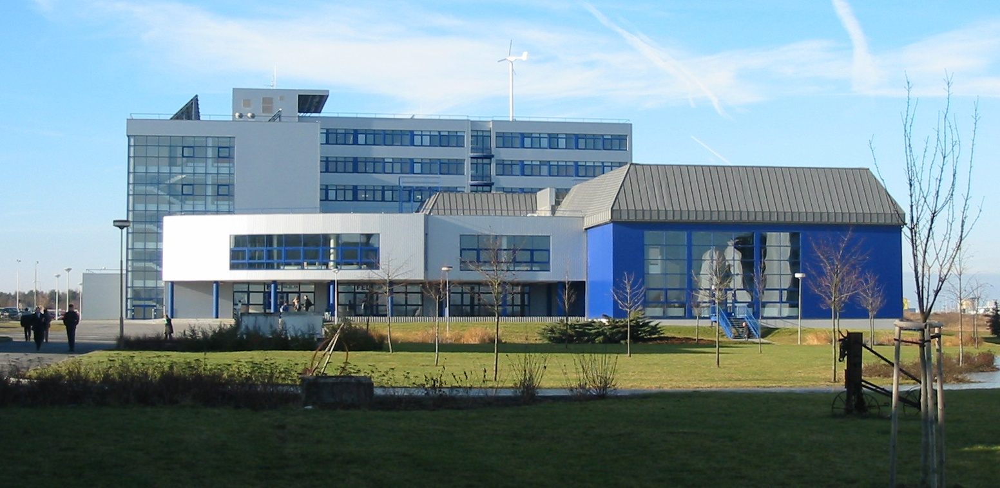

About & Contact
Michal Švantner.
Senior Researcher · Thermography · Infrared NDT · Temperature Measurement
About me
My work combines active thermography, infrared non-destructive testing and temperature measurement with data analysis and practical applications.
Affiliation

Senior Researcher and Team Leader at the New Technologies Research Centre (NTC), University of West Bohemia, Plzeň, Czech Republic.
I am part of the Infrared Technologies team.
Contact & profiles
University of West Bohemia in Pilsen
Pilsen, Czechia
PROFESSIONAL PROFILES
PERSONAL PROFILES
Professional activities
Source: ORCID · 3 professional activities · Saved 26 October 2026.
Czech Society for Non-Destructive Testing (ČNDT)
Member of the Presidium of the ČNDT since 2024
European Committee for Standardization
TC138/WG11 Thermographic testing